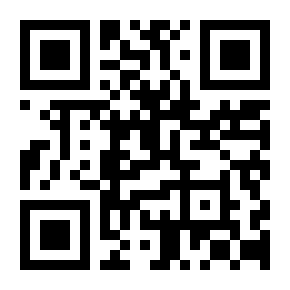

Entrando en el mundo de las personas inquietas
Free/Libre/Open Source software: FLOSS
@jjmerelo
Creación de identidad
¿Qué es lo libre/abierto?
¿Dónde están los graduados de
Friends?
Aprendizaje social
¿Qué es lo libre/abierto?
Una relación productor/consumidor...
Basada en la libertad
Software libre

Ciencia abierta

Cultura libre

Makers

Datos abiertos/transparencia

Redes libres/Mapas colaborativos

El espíritu libre/abierto es el de
la universidad
Una Oficina de Software Libre:
facilita el aprendizaje
social
ayuda a evolucionar la
identidad personal y
sostiene y apoya a la
comunidad
¿Cuál es la clave?
Identificación, apadrinamiento
y coordinación de la comunidad
Explicando y visibilizando
Identificando necesidades emergentes
Ayudar a la autoorganización
Usando herramientas ligeras
Proporcionando una referencia
... Y un espacio físico
... Con pasión
Hablar de lo libre/abierto es hablar de
valores
Y esos mismos principios son los de la
universidad
Apoyar el software libre ⇒ universidad
Y universidad ⇒ software libre
Mira fijamente...

aka.ms/MTS75

{kind=link}
{kind=link}
{kind=link}
{kind=link}